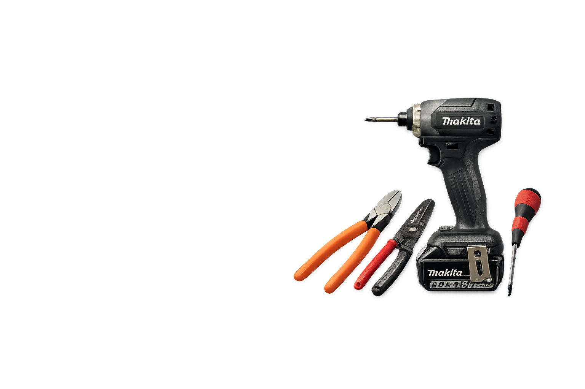
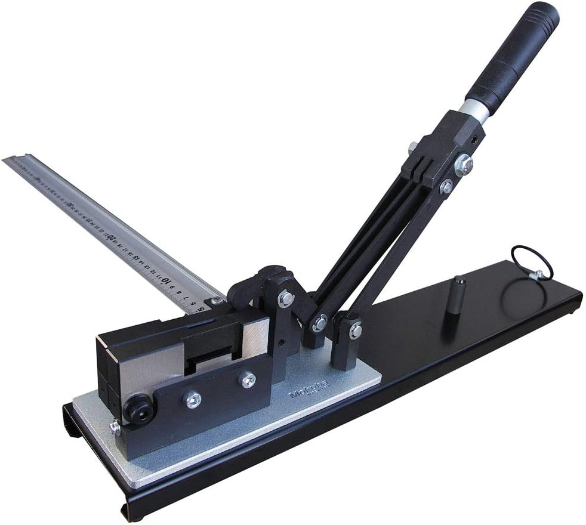

01
現場で使っている工具を中心に紹介
実際に使っている感覚をベースにしているので、机上の比較だけになりにくいです。
ニッパー、ストリッパー、圧着工具、ドライバー、テスター、メガー、充電工具、ケーブルカッター、通線工具、腰道具まで、 現場で出番のある物を中心にまとめています。
何となく工具を選ぶよりも、作業内容に合った物を使い分けた方が失敗しにくく、作業もしやすいです。 このサイトでは、実際に使っている感覚ベースで選びやすく整理しています。
電気工事士が現場で使っている工具を、実体験ベースで整理した専門サイトとして、カテゴリごとに比較しやすくまとめています。
これから工具をそろえたい人も、今使っている工具を見直したい人も、カテゴリから探せるようにしています。
電気工事士が実際に現場で使っている工具をベースにまとめています。

現場で出番の多い工具を、使い分けしやすいようにカテゴリ別で整理しています。
実際に使っている感覚をベースにしているので、机上の比較だけになりにくいです。
似ている工具でも、どの作業で使いやすいかが分かるように整理しています。
まず何から見ればいいか迷わないように、出番の多いカテゴリを先に見つけやすくしています。
電気工事の基本作業は「切る・剥く・圧着する・確認する」です。ニッパー・ストリッパー・圧着工具・テスターを先に見ると、作業の流れごとに選びやすくなります。


最初に出番の多い3カテゴリを見て、そのあと必要な周辺工具や使い方記事へ進む流れにしています。
圧着工具ページの中で、LANまわりもちゃんと見られるようにしました。
LANは見た目だけでは判断しにくいので、端末処理後にチェックする流れがかなり大事です。
チェッカーがあると、番号ズレや点灯しない線などを確認しやすく、安心感がかなり違います。
LANかしめ工具と、チェッカー2機種の流れが1ページでつながるようにしてあります。
上から順に、出番が多くて選びやすいカテゴリを先に並べています。スマホでもそのまま見やすいように並べています。
工具紹介とは別で、作業のコツもまとめています。 通線系は「通線工具」→「配管入線のコツ」の順でも見やすいようにしています。





トップページでも、通線だけは見方が分かるように整理しておきました。
どの道具を使うか迷う時は、最初に親記事の「通線工具」から見るのがおすすめです。 スチールワイヤー、ロッドタイプ、補助用品の違いを先に見ておくと選びやすいです。
通線工具の記事を見る通線系は「通線工具」→「配管入線のコツ」の順でも見やすいようにしています。
何でも1本で済ませようとすると、結局使いにくかったり失敗しやすくなります。 切る、剥く、圧着する、測る、通す、運ぶ、といった作業ごとに見るとかなり選びやすいです。
用途別の工具一覧を見る※当サイトはAmazonアソシエイト・プログラムに参加しており、適格販売により収入を得ています。